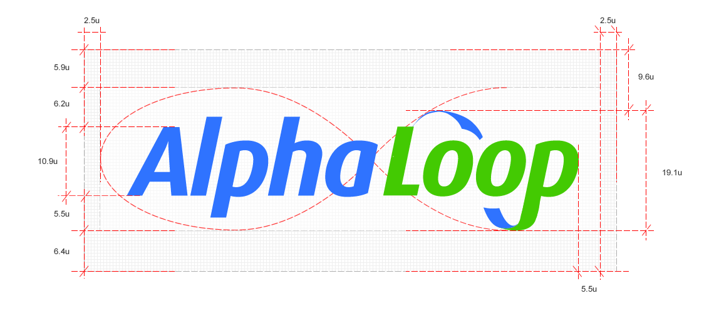

AlphaLoop case study
I was contracted in June 2010 as a consultant UX designer for this financial technology startup. Soon after completing the initial assignment I joined the company as a partner, responsible for product strategy, design and marketing.About the project
AlphaLoop was conceived as a compliance-focused news aggregation, information management and collaboration tool for the institutional financial community.
Syndication agreements were negotiated with almost all of the premium content providers in the market, including Moody's, Fitch Ratings, Standard & Poor's, LCD and Capital Structure.
The target users were analysts, traders and back office staff in financial institutions, using Bloomberg terminal software or Thomson Reuters Eikon.
Branding
When the project started it had the codename 'Alphadig'. The word alpha has special signifance in the financial sector as it can mean the risk-adjusted rate of return for a given asset. It suggests priveleged and valuable knowledge so was a good fit for an information and collaboration tool. Alpha is implied in the logotype by the direction of the loop swashes, which lead into the shape of the lowercase Greek letterform.
The loop part of the name is a reference to the flow of information, the feedback loop, that is a crucial selling point of the system.
User experience design
Rapid prototyping
My first involvement in the project was constructing wireframes which incorporated the founder's ideas. During the course of the project, I continued to develop the interaction design by prototyping functionality.
You can click around a sample prototype below, please be aware that because it's an internal prototype, Internet Explorer is not supported.
User interviews
I conducted interviews with a number of professionals in the credit industry, in hedgefunds and other buy-side institutions. All the interviews took place in the subject's work environment, so I could learn as much as possible about their contextual surroundings.
Findings informed the development of the system in several ways, including:
- Simplification of the document/research management functionality
- Shifting front-end technology from HTML and Javascript to Adobe Air, as almost all of the subjects used outdated versions of Internet Explorer, which has poor Javascript performance.
- Manual client-side user management changed to automated registration
Interface design
I did all of the UI design for the web and mobile applications. The interface evolved considerably over the course of the project as I developed branding, responded to user research findings and incorporated new functionality.
Promotional video
In order to articulate the benefits of the system to commercial partners and prospective investors, we decided to make a short video.
The video was my responsibility and we had very little budget to work with, so I did all of the following:
- Sketches and storyboarding
- 3D modelling and animation (some models were bought)
- Researched and rented HD camera and lighting equipment
- Hired a cameraman and sound designer/composer
- Scouted locations and shot supplemental footage
- Directed shooting in three locations
- Compositing and editing

Brochure website
I designed the brochure site with the aim of making our proposition clear and compelling. The front page shows, at a glance, the inputs and outputs of the system. Each one of the features has a little more information in a tooltip, and considerably more on a dedicated page if you follow the link.
I did all of the content and visual design, then recruited and supervised a front-end developer to build it.
→ Visit the brochure site